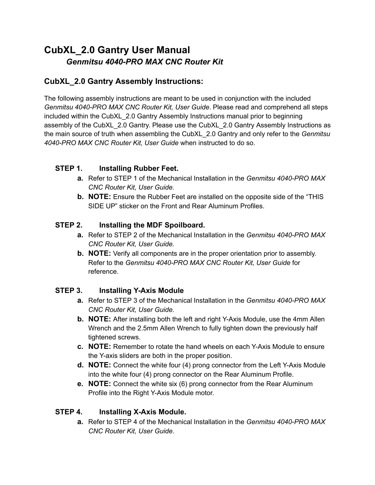
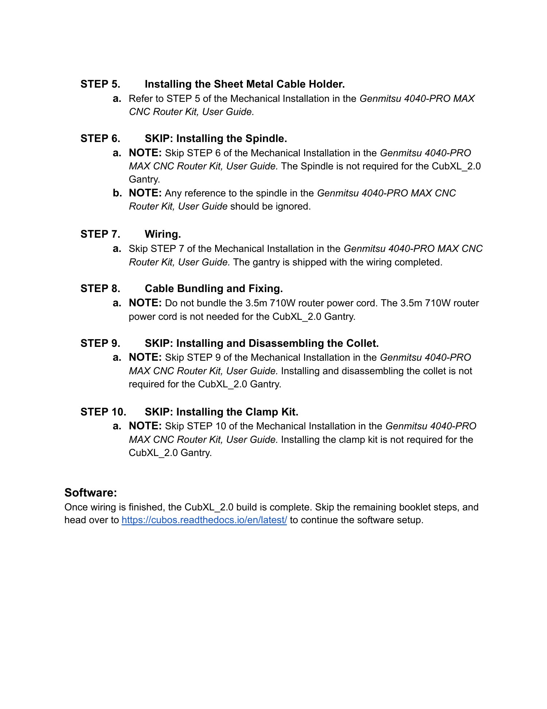

Gantry build guide · CubXL 2.0
CubXL 2.0 Gantry
Assemble the CubXL 2.0 from the Genmitsu 4040-PRO MAX CNC Router Kit. Use this guide as the main source of truth and the Genmitsu user guide only for the referenced mechanical steps.
Source: CubXL_2.0 Gantry User Manual, Rev. 0.
Assembly steps
- Install the rubber feet. Refer to Step 1 of Mechanical Installation in the Genmitsu 4040-PRO MAX CNC Router Kit User Guide. Install the feet on the side opposite the “THIS SIDE UP” sticker on the front and rear aluminum profiles.
- Install the MDF spoilboard. Refer to Step 2. Verify every component is correctly oriented before assembly.
- Install the Y-axis modules. Refer to Step 3. After installing both modules, fully tighten the previously half-tightened screws with the 4 mm and 2.5 mm Allen wrenches. Rotate both hand wheels so the Y-axis sliders are positioned correctly. Connect the white four-prong connector from the left module to the matching connector on the rear profile, then connect the rear profile’s white six-prong connector to the right-module motor.
- Install the X-axis module. Refer to Step 4.
- Install the sheet-metal cable holder. Refer to Step 5.
- Skip spindle installation. The spindle is not required for the CubXL 2.0 gantry; ignore spindle references in the Genmitsu guide.
- Skip wiring Step 7. The gantry is shipped with wiring completed.
- Bundle and fix cables. Do not bundle the 3.5 m, 710 W router power cord; it is not needed for this gantry.
- Skip installing and disassembling the collet. This is not required.
- Skip installing the clamp kit. This is not required.
Software
When wiring is finished, the CubXL 2.0 build is complete. Skip the remaining booklet steps and continue with CubOS software setup.
Illustrated source manual
Read the original assembly figures and parts tables below. These pages were retrieved from KABLab on September 22, 2026. Open the source Google Doc for later changes.
View all 2 illustrated pages

